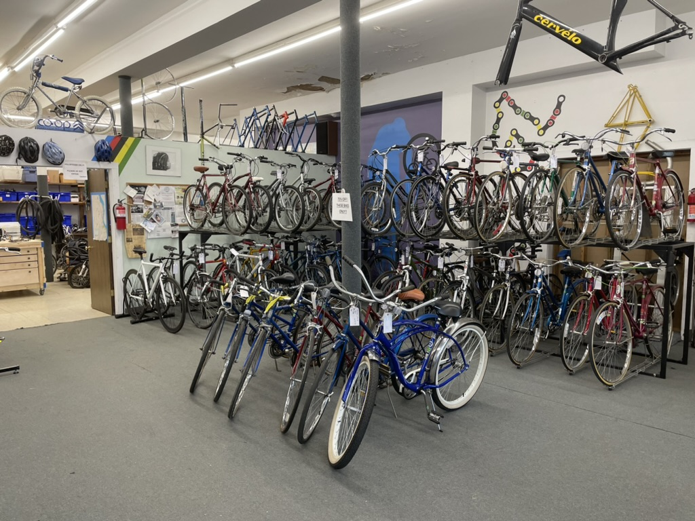
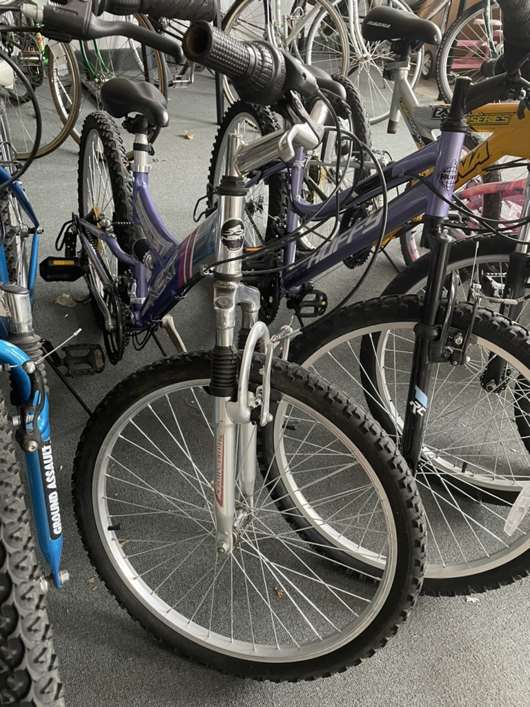
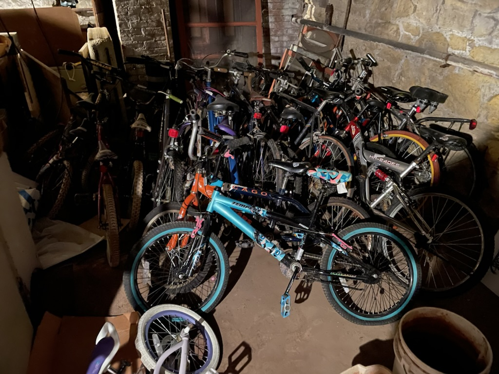

We accept any and all bicycle-related donations.
Donated bikes go into one of three streams:
Checkout Bikes:
bike-shop quality bikes that are repairable are tuned up by our volunteer mechanics.
These bikes are available to be checked to the public. Patrons simply pay a deposit
(typically $80-$250 depending on the bike) up front and get the bike for up to three-months.
Bikes may be returned anytime during the checkout period and the patron will get their deposit
returned minus a $25 shop fee and any damages beyond normal wear-and-tear. If the patron loves
the bike (and we hope they do!), they may keep it. If the bike is not returned by the end of the
three-month period, they automatically take ownership of the bike and forfeit the full deposit.
[Fun fact: only about 5% of bikes are returned!]
Bikes that have not yet been tuned up are also available for purchase as-is. Talk with one of our volunteers for more details.


Bargain Bikes:
department-store quality bikes in good
working order. These bikes are tuned up by our volunteer
mechanics and are available for purchase by the public at an
“as-is” price.
Current Pricing:
Re-use/Recycle Bikes:
all other bikes, typically damaged or beyond their useful life, fall into this category.
We do salvage useable and desired parts. These bikes/parts also make great art projects/materials. Stop by the
shop and talk with one of our volunteers if you want to peruse our current assortment.
Ultimately, any leftover items in this stream are recycled.
